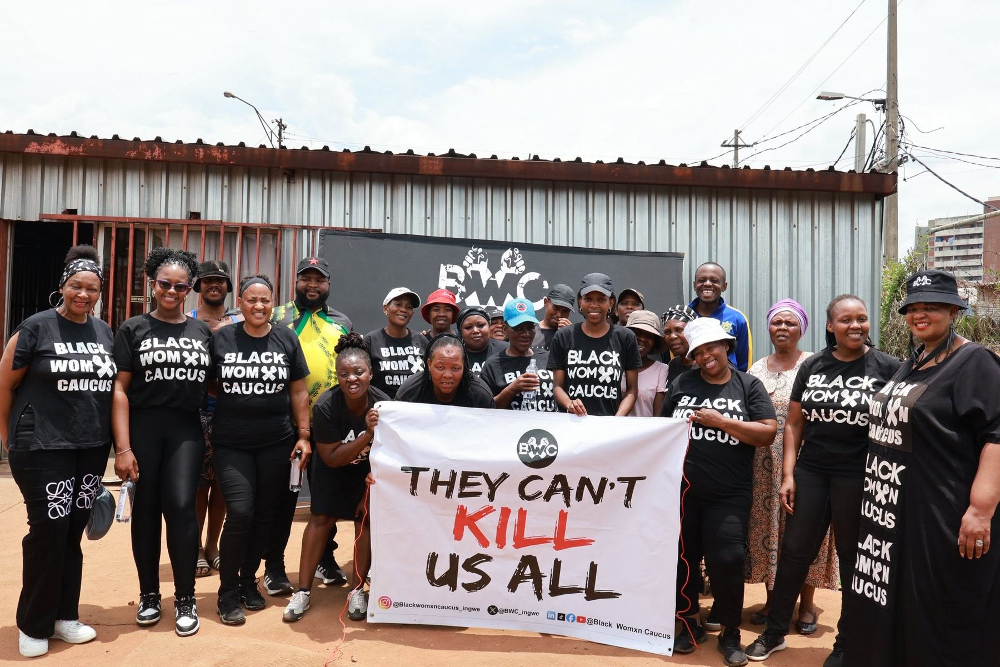

Founded 2017 · Johannesburg, South Africa
Organizing
for survival.
A youth-led, feminist, intergenerational movement building a society free of violence against women and children.
Get involved
Who we are
Feminist popular
education, in action.
BWC was founded in 2017 at the University of the Witwatersrand, in response to the escalating crisis of Gender-Based Violence and Femicide against women — including LGBTQIA+ persons, gender non-conforming people, and persons with disabilities — and children in South Africa.
From a university movement, BWC has grown into a national force with continental and international reach, pioneering moments like #TheTotalShutdown and #SandtonShutdown.
Read our full story →Three structures, one movement
Our divisions
Black Girls in Caucus
Working with youth aged 13–21 to drive social behavioural interventions that promote equality and challenge toxic norms and values.
Black Womxn Caucus
The founding division: feminist political education, policy engagement, leadership development and institution building for young feminists in higher learning and beyond.
Bereka Mosadi — Working Women
Community-based work with working-class women in townships, informal settlements and rural communities — safety, economic activity, and food sustainability.
Following the historic march to the Johannesburg Stock Exchange in 2019, #FundTheFight calls on the private sector, government, and global actors to redistribute the resources needed for community-led, feminist-driven interventions against GBVF.